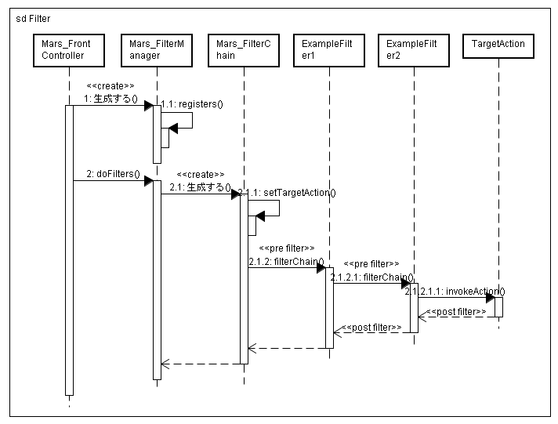

戻る
最終更新日: 2007 年 12 月 5 日
このドキュメントは情報が整備されておらず、情報が古い可能性があります。ドキュメントは新しく書き換える予定です。
フィルタの概要
フィルタはユーザからのリクエスト、及びレスポンスに対して、何らかの処理を行うオブジェクトです。Web アプリケーションを構築していると、次のような共通の処理が発生することがあります。
- ユーザの認証
- ユーザ情報の取得 (ブラウザ、IP アドレスのチェックなど)
- アクセスロギング
- コンテンツタイプの変換
- 例外キャッチ
これらの処理を全てのアクションに定義するのはあまりに非効率であり、また、メンテナンス性の低下に繋がります。この問題を解決するために使われるのがフィルタであり、一般的に Intercepting Filter と呼ばれるデザインパターンに当たります。
フィルタを定義する場合は、アプリケーションにおける共通処理を独立可能な単位に分けて下さい。例えば、共通の処理がログインチェックとロギングであれば、認証フィルタ、ロギングフィルタといったクラスを作成します。個々のフィルタでは、アクション同様 Delta_DIContainer からコンポーネントを取得することが出来るため、レスポンスに対する前処理、後処理を施すことが出来ます。
実際のフィルタ定義サンプルを示します。
- YAML Code# modules/{module}/config/filters.yml
# システムメンテナンスフィルタ
systemMaintenanceFilter:
class: SystemMaintenanceFilter
enable: TRUE
次にフィルタクラスを作成します。フィルタクラスは Delta_Filter 抽象クラスを実装していることに注目して下さい。
- PHP Code# libs/SystemMaintenanceFilter.php
class SystemMaintenanceFilter extends Delta_Filter
{
public function doFilter($chain)
{
// 前処理 (プレフィルタ)
// 次のフィルタ (アクション) へ移動
$chain->filterChain();
// 後処理 (ポストフィルタ)
}
}
以上でフィルタの設定は完了です。今後は、モジュール内のアクションが起動するたびに SystemMaintenanceFilter#doFilter() メソッドが処理されるようになります。
フィルタチェインの実装
filters ファイルに複数のフィルタを定義することで、連鎖的にフィルタを処理することが可能です。例えば次のようなフィルタとアクションを定義したとします。
- ExampleFilter1 (config/global_filters.yml)
- ExampleFilter2 (modules/{module}/config/filters.yml)
- TargetAction (modules/{module}/actions/TargetAction.php)
この時の処理の流れは次のようになります。(シーケンス図参照)
- コントローラは Delta_FilterManager を起動
- Delta_FilterManager は filters ファイルを解析し、Delta_FilterChain オブジェクトを生成
- Delta_FilterChain は ExampleFilter1#doFilter() メソッドを実行
- ExampleFilter1 のプリフィルタを実行
- filterChain() により次のフィルタを処理
- Delta_FilterChain は ExampleFilter2#doFilter() メソッドを実行
- ExampleFilter2 のプリフィルタを実行
- filterChain() により次のフィルタ (フィルタがないためアクション) を実行
- TargetAction を実行 (セキュリティチェック、コンバート、バリデータの実行など)
- テンプレートの出力 (アクションフォワード時は次のアクションを処理。この時フィルタ遷移は 1 に移動する)
- Delta_FilterChain は ExampleFilter2 のポストフィルタを実行
- Delta_FilterChain は ExampleFilter1 のポストフィルタを実行

パッケージフィルタ機能
パッケージフィルタは、従来のフィルタ機能を拡張したアクションのパッケージ機能です。
delta はアクションのディレクトリを自由に階層化することが出来ますが、パッケージフィルタを利用することで、アクションの階層単位でフィルタリング処理が可能になります。
- ディレクトリ階層の例
- actions
- PackageClient1Action.php
- foo
- PackageClient2Action.php
- bar
- PackageClient3Action.php
- filter:
- filter.yml
- YAML Code# modules/{module}/config/filter.yml
foo:
class: FooFilter
enable: TRUE
packages:
- {module}:foo/
packages 属性において "{module}:foo" ({module} は実際のモジュール名) を指定してますが、これは実行しようとしているアクションが modules/{module}/actions/foo パッケージの直下にある場合にフィルタを実行します。FooFilter は actions ディレクトリ直下の PackageClient1 や、foo/bar ディレクトリ下の PackageClient3 アクション起動時に処理を実行しません。foo パッケージ下全てのアクションを対象としたい場合は、"{module}:foo/*" のように最後をアスタリスクを付けて下さい。